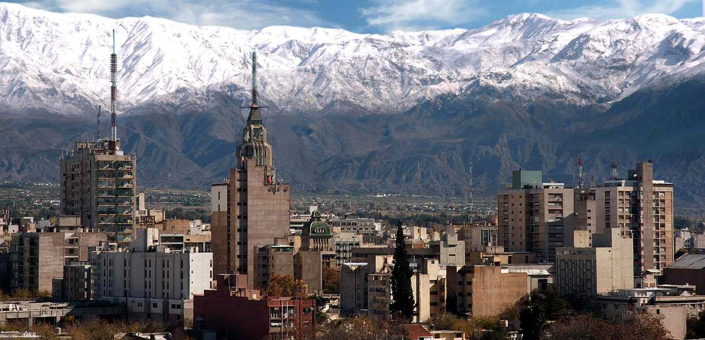

🌸 Constanza Mariño 🌸
About me

Hi! My name is Constanza Mariño. I am from Mendoza, Argentina. My province is known for its wines and mountains. I'm studying a degree in Tourism and another in French apart from Web & Computer Programming. I have four cats that I adore with all my heart: Kitty, Alex, India and Freddy. In my free time, I enjoy playing chess, drawing, listening to music and running on weekends. I also love learning languages, so that's why I speak English, French and Portuguese besides Spanish. I am thrilled to learn about web development and create both my own websites and other people's web pages! I am enjoying so far these courses, I have learned a lot and I'm looking forward to learn more.
Mendoza, Argentina

Argentina is a country known for its cultural, natural and historic richness. It's the home of tango and one of the first countries that come to your mind when you think about football, with Lionel Messi and a strong consolidated football team. It stands out for its gastronomy, specially the "asados", the "empanadas" and the "mate".
Argentina possesses unique landscapes like Patagonia, the Iguazu Falls, the Quebrada de Humahuaca and the Cordillera de Los Andes. It's one of the main wine producers, particularly in Mendoza, and is equally recognized for writers like Jorge Luis Borges and Julio Cortázar, its strong musical and folkloric tradition, and the spirit and passion of its inhabitants with a cultural identity mixed with the europeans immigrants and natives ones.
